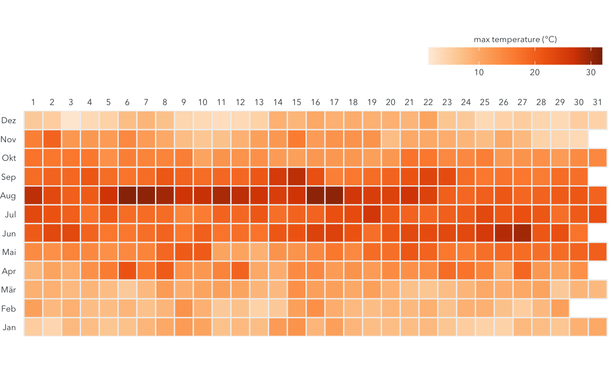
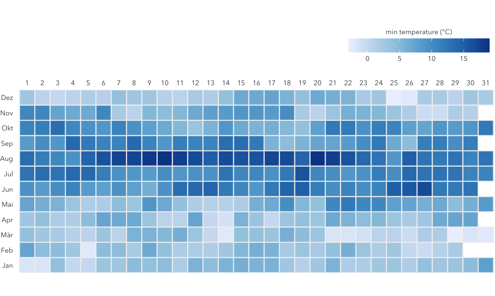

The two heatmaps show the daily maximum and minimum temperatures observed in Holtenau station in Kiel, Germany. All observations were record by Deutscher Wetterdienst in the period between 01.01.2020 and 31.01.2020
How to read the heatmap
library(dplyr)
library(ggplot2)
library(lubridate)
text_color = "#353d42"
caption_color = "#666666"
font = "Avenir Next"
kiel_tem <- read.csv("/Users/huvi/Downloads/kiel_temperature.csv") %>%
mutate(
tem_max = round((TMAX - 32)*5/9,1),
tem_min = round((TMIN - 32)*5/9,1)
) %>%
mutate(
date = ymd(DATE),
year = year(date),
month = as.factor(month(date, label = TRUE)),
day = as.factor(day(date))
)%>%
select(month, day, tem_max, tem_min)
ggplot(kiel_tem, aes(x = day, y = month, fill = tem_max)) +
geom_tile(color = "#f0f0f0", size = 0.5) + #Color size of border between tiles
coord_equal() + # draw square instead of rectangular tiles
scale_x_discrete(name = NULL, position = "top") +
scale_y_discrete(expand = c(0, 0), name = NULL) +
scale_fill_distiller(
type = "seq",
palette = "Oranges",
direction = 1,
limits = c(1, 32),
name = "max temperature (°C)",
guide = guide_colorbar(
barwidth = grid::unit(2, "in"),
barheight = grid::unit(0.2, "in"),
title.position = "top",
title.hjust = 0.5
)
) +
theme(
panel.background = element_blank(),
axis.ticks = element_blank(),
axis.text = element_text(family = font, color = text_color, size = 7),
legend.title = element_text(family = font, color = text_color, size = 7),
legend.text = element_text(family = font, color = text_color, size = 7),
legend.position = "top",
legend.justification = "right",
plot.margin = margin(t = 0, b = 0, r = 0, l = 0)
)
ggplot(kiel_tem, aes(x = day, y = month, fill = tem_min)) +
geom_tile(color = "#f0f0f0", size = 0.5) + #Color size of border between tiles
coord_equal() + # draw square instead of rectangular tiles
scale_x_discrete(name = NULL, position = "top") +
scale_y_discrete(expand = c(0, 0), name = NULL) +
scale_fill_distiller(
type = "div",
palette = "Blues",
direction = 1,
limits = c(-3, 19),
name = "min temperature (°C)",
guide = guide_colorbar(
barwidth = grid::unit(2, "in"),
barheight = grid::unit(0.2, "in"),
title.position = "top",
title.hjust = 0.5
)
) +
theme(
panel.background = element_blank(),
axis.ticks = element_blank(),
axis.text = element_text(family = font, color = text_color, size = 7),
legend.title = element_text(family = font, color = text_color, size = 7),
legend.text = element_text(family = font, color = text_color, size = 7),
legend.position = "top",
legend.justification = "right",
plot.margin = margin(t = 0, b = 0, r = 0, l = 0)
)
Some highlights
Personal opinion: Compared to other parts of Germany, the temperature range in Kiel is quite temperature. The weather is quite nice, but sometimes it can also be too windy (for a bike rider like me :D)